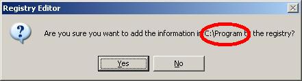
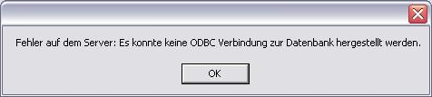

|
|
|
|
 Frequently Asked Questions Frequently Asked Questions
Installation des Servers
- Problem: Die benötigte Registrierung konnte nicht durchgeführt werden.
Ursache: Der Verzeichnisname wurde Fehlerhaft eingelesen.
Lösung: Im Ordner project.ELS\Server\pgadmin befindet sich eine pELS_odbc.reg. Starten sie diese Datei per Hand (durch Doppelclick).

Fehler beim Registrieren
Benutzung des Servers
- Problem: Während der Installation der PostgreSQL Datenbank öffnet sich nochmal das Fenster "Wollen sie die PostgreSQL Datenbank insallieren?".
Ursache: Das PostgreSQL Datenbankmanagement startet während der Insallation in einem anderen Prozess neu.
Lösung: Verneinen sie die Frage und starten sie den project.ELS Server Installationsassistenten neu, nachdem sie die PostgreSQL Installation abgeschlossen haben.
Benutzung des Clients
- Problem: Im Portal Reports können keine Dokumente angezeigt werden. Es erscheint immer eine Fehlermeldung.
Ursache: Auf dem Server wurde der ODBC Treiber nicht korrekt installiert, oder die Eintragung in die Registrierung ist Fehlerhaft.
Lösung: Überprüfen sie auf dem Server ob der ODBC Treiber und auch die Datenbank korrekt installiert sind.
Falls ja, überprüfen sie die Verbindungseinstellungen zur Datenbank auf dem Server.
Falls diese korrekt sind. Fügen sie die Datei pELS_ODBC.reg der Registrierung hinzu.

Fehler beim Drucken
Haben Sie ein hier nicht aufgelistetes Problem, mailen Sie es uns an els@sigmadelta.de und wir werden uns schnellst möglich für eine Lösung sorgen.
|
|